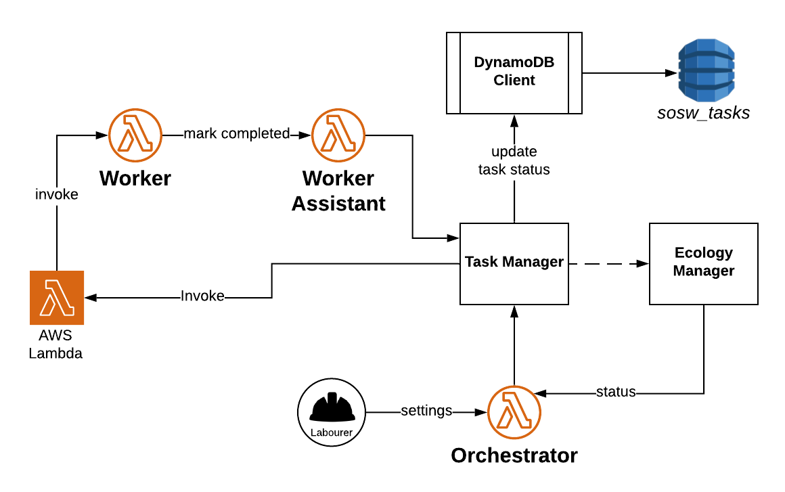

Orchestrator
Orchestrator does the … Orchestration.
You can use the class in your Lambda as is, just configure some settings using one of the supported ways in Config
The following diagram represents the basic Task Workflow initiated by the Orchestrator.

Workers Invocation Workflow
TASKS_TABLE_CONFIG = {
'row_mapper': {
'task_id': 'S',
'labourer_id': 'S',
'greenfield': 'N',
'attempts': 'N',
'closed_at': 'N',
'completed_at': 'N',
'desired_launch_time': 'N',
'arn': 'S',
'payload': 'S'
},
'required_fields': ['task_id', 'labourer_id', 'created_at', 'greenfield'],
'table_name': 'sosw_tasks',
'index_greenfield': 'sosw_tasks_greenfield',
'field_names': {
'task_id': 'task_id',
'labourer_id': 'labourer_id',
'greenfield': 'greenfield',
}
}
TASK_CLIENT_CONFIG = {
'dynamo_db_config': TASKS_TABLE_CONFIG,
'sosw_closed_tasks_table': 'sosw_closed_tasks',
'sosw_retry_tasks_table': 'sosw_retry_tasks',
'sosw_retry_tasks_greenfield_index': 'labourer_id_greenfield',
'ecology_config': {},
'labourers': {
'some_function': {
'arn': f"arn:aws:lambda:us-west-2:737060422660:function:some_function",
'max_simultaneous_invocations': 10,
'health_metrics': {
'SomeDBCPU': {
'details': {
'Name': 'CPUUtilization',
'Namespace': 'AWS/RDS',
'Period': 60,
'Statistics': ['Average'],
'Dimensions': [
{
'Name': 'DBInstanceIdentifier',
'Value': 'YOUR-DB'
},
],
},
# These is the mapping of how the Labourer should "feel" about this metric.
# See EcologyManager.ECO_STATUSES.
# This is just a mapping ``ECO_STATUS: value`` using ``feeling_comparison_operator``.
'feelings': {
3: 50,
4: 25,
},
'feeling_comparison_operator': '<='
},
},
},
},
}
ORCHESTRATOR_CONFIG = {
'task_config': TASK_CLIENT_CONFIG,
}
Example CloudFormation template for Orchestrator
See also Greenfield
View Licence Agreement- class sosw.orchestrator.Orchestrator(*args, **kwargs)[source]
- Orchestrator class.Iterates the pre-configured Labourers and invokes appropriate number of Tasks for each one.
- get_db_field_name(key: str) str[source]
Could be useful if you overwrite field names with your own ones (e.g. for tests).
- get_desired_invocation_number_for_labourer(labourer: Labourer) int[source]
Decides the desired maximum number of simultaneous invocations for a specific Labourer. The decision is based on the ecology status of the Labourer and the configs.
- Returns:
Number of invocations